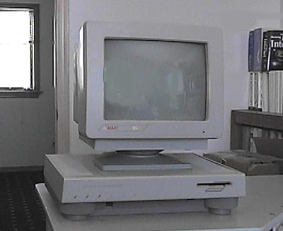

The Atari Historical Society would like to thank Kai Herrgen who provided the information to clear up the mystery about the above Atari ST system, the following were the supposed specs for this system... The Atari EST:
CPU:
Motorola 68020
FPU:
Motorola 68881/2
Memory:
4 MB
OS:
Unix System V or TOS
Remarks:
6 new custom chips, with Blitter II and Shifter II
Price:
$3,000 +
The above information came from the German
magazine DATA WELT May 1986, the article headline was: A New 32-Bitter.
Some additional information on the MMU is: